The goal of Spaceward Ho! is to conquer the galaxy.
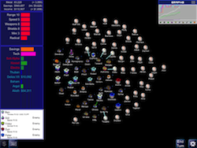
When starting a new game, we just recommend clicking the Start button and leaving the defaults as initially set. The defaults include a Thriving home system. Later on you can adjust the shape of the galaxy, or the size, or even how many opponents you compete against.
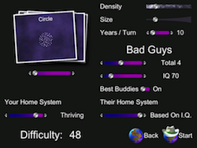
The planets you have colonized are represented by a white hat. Any planet which has ships around it will have blue dots representing the ships. To select a planet just tap on it.

You can choose to start out on a single, wonderful, heavily populated planet. You have just become capable of building your first interstellar space ships. The planet may start off with Scout ships and a Colony Ship, but you can always build more ships by double-tapping on the planet.
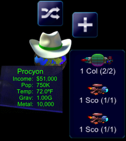
There are many unexplored planets in the galaxy.
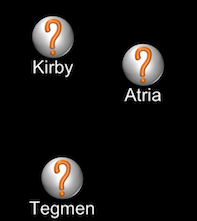
Send your scout ships off to the planets to discover the star systems. Drag from the name of the ship to the planet you wish to explore. If you don't wish to send a ship, drag it back to its home planet.
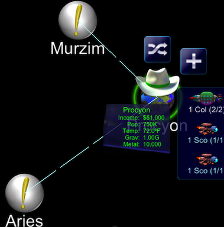
When you are done sending off your ships, you need to tap on the End Turn button. This signifies you have done everything you want to for the turn
Some star systems will be more habitable than others. The closer the gravity of the planet is to 1.00G the better it is! If the temperature is far off from 72F, don't worry -- you can always terraform the planet to match the best temperature. Each planet also has various amounts of metal. Metal is used to build new ships. Once you find a planet that is similar to your home planet, you build a Colony Ship and go colonize it.
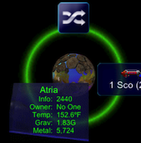
Once there, you make its temperature better by terraforming it, mine all the metal from it, and then use it as a base for further exploration and colonization. Use the slider on the left side of the planet to adjust to more terraforming (top part of the slider) to mining metal (bottom part of the slider). The slider will disappear if there is no longer a choice between the two. After several centuries the new planet's population will grow so large that it will start making a significant profit, just like your home planet.
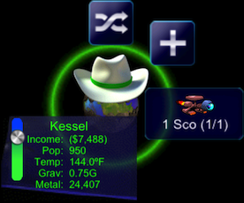
You can see how much metal and money you have, plus how much you have saved by the top left of the Info bar
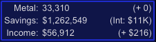
You'll hop from planet to planet expanding your galactic empire. Eventually, you'll run into opposition -- bad guys who are out to conquer the galaxy, too.
Besides exploring and colonizing, you'll need to defend yourself against the more aggressive of these alien races. You can do this by building defensive satellites at your colonies. To build ships and satellites, double tap on the colony where you wish to build. This will bring up the build ships dialog. You can adjust the Weapons and Shields and other technologies for the ships, or you can max out the technologies with one button.
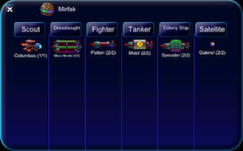
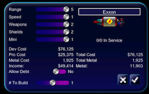
You also can defend yourself by building fleets of fighters and preemptively counterattacking the aliens -- the old "best defense is a good offense" strategy. Once you send your fighters off, you can watch the results of the battle.
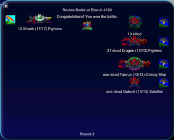
If fighting isn't to your taste, you can befriend some of these aliens, creating allies instead of enemies. Just tap on the enemy name to ask them to ally with you. But be warned, not everyone will want to ally.
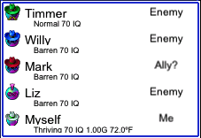
In addition to building ships and terraforming and mining planets, you'll spend money on technology research. The first ships you build can travel to other stars, but they're big, slow, clunky, and weak. When you spend money on research, your ship technology levels will improve. To no one's surprise, better ships will destroy obsolete ones in battle. To adjust the money you spend on a technology, just tap and drag to adjust how much you spent.
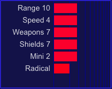
You have a total of 100% to spend and the bars represent the amount you are spending. Range allows your ships to travel to more distant planets. Speed lets them travel faster, and also the higher speed allows ships to fire first in battle. Weapons and shields determine how well a ship fights in battle. Mini (miniaturization) allows you to build ships for less metal but more money. Mini is useful since metal can be a lot scarcer than money. Radical allows you to have a completely random technology that is outside of the normal tech levels.
You can also view your entire list of planets you have colonized. You can tap on one to view it in the galaxy. You can also adjust how much money you spend on the planet. Or, how much you spend on Technologies or put back into your savings.
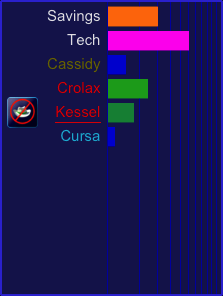
Sometimes you might want to go back and see what has happened in the past, just click the History tab. You can scroll the items. To review a single item, just tap on it.
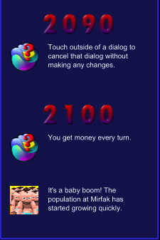
When you kill all enemy colonies, you win. You're free to keep playing, but there won't be any resistance from the bad guys, since they're dead.
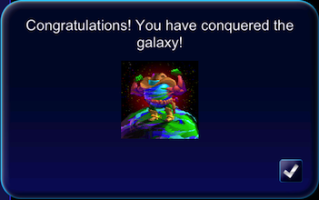
This gives you just a brief introduction to playing Spaceward Ho! You can find more information and more details on playing Spaceward Ho! By visiting our website, Ariton.com